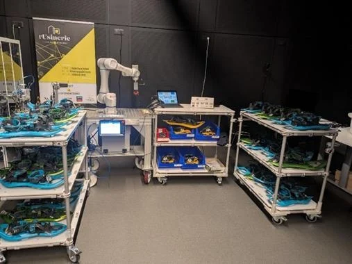

Interaction · Python & Unity
Walking in Place
Transformer les mouvements des jambes filmés en déplacement dans une scène Unity.
Découvrir le projetPORTFOLIO / ARNAUD CARBONNEL
Création numérique & gestion de projet.
Un espace pour partager mes réalisations,
mes expérimentations et ce que j’apprends.
01 / MES RUBRIQUES
3D, réalité augmentée et expériences interactives.
Le contexte, le travail d’équipe et le parcours des réalisations.
Études scientifiques, expérimentation et articles collectifs.
Tester. Apprendre. Créer. Mes projets personnels.
02 / QUELQUES RÉALISATIONS
Interaction · Python & Unity
Transformer les mouvements des jambes filmés en déplacement dans une scène Unity.
Découvrir le projet
Vidéo 360° · Unity · Gestion de projet
Chef de projet : relation entreprise / équipe, cahier des charges, développement de l’application et suivi.
Découvrir le projet
Recherche · Coauteur · SAGIP 2026
Étudier comment l’introduction progressive d’un robot collaboratif influence l’expérience des opérateurs.
Découvrir l’étude03 / EXPLORATIONS
De la numérisation 3D à la création de ce portfolio, mes explorations donnent une place aux essais, aux difficultés et aux apprentissages.
Parcourir les explorations ↗
ET LA SUITE ?
Une opportunité, un projet ou simplement une question.
Prendre contact ↗